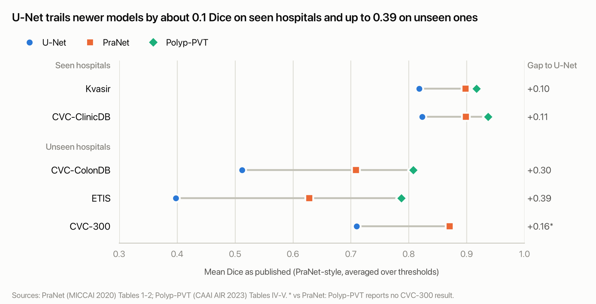

How much of the progress in polyp segmentation survives a strict test?
Polyps are small growths in the bowel that doctors look for during a colonoscopy. Computer models can outline them in the video. Papers say newer models are much better than the classic U-Net. We test whether that is still true when every model is trained and measured the same fair way, on one laptop, with the cost shown next to the quality.
The starting point
On hospitals the models never saw, the published gap between U-Net and newer models grows from about 0.1 to as much as 0.39 Dice. Is that the architecture, or a weak baseline and a loose protocol?

The plan
Nine stages, done one at a time. Each one ends with a page like this that explains what was done and why.
-
1
Done
Study of real projects
Ten repositories read at pinned commits, published numbers collected, project rules fixed.
-
2
Done
Skeleton and data
Environment, data audit and saved split, tested metrics, data loader, training loop.
-
3
Done
Reproduce the reference
PraNet's published numbers reproduced from the authors' maps and from the released weights, run on the Mac.
-
4
In progress
U-Net from scratch
Our own U-Net, checked against a widely used version, now training: five runs on the laptop.
-
5
Planned
U-Net with a pretrained encoder
ResNet-34 from segmentation_models.pytorch, same recipe, only the model changes.
-
6
Planned
Frozen foundation model
A linear head on DINOv3 ViT-S features, trained in minutes.
-
7
Planned
Experiments
Test-set selection bias, label fraction, unseen hospitals, ablations, error analysis, on-device latency.
-
8
Planned
Demo, report, publication
Gradio demo, a short technical report, the public repository.
-
9
Planned
Server stage
nnU-Net, EoMT and SAM 3 pseudo-labels on university GPUs.
What makes it different
A strict protocol
A saved validation split, checkpoints chosen on validation only, three seeds and confidence intervals on every number.
Quality next to cost
Training minutes, memory and latency sit in the same table as Dice, so every step up the ladder shows its price.
Reproducible
Every table and chart is produced by a script from saved results. Splits and configs live in the repository.
Explained step by step
Each stage links every claim to a paper table or a line of code, and ends with the questions an interviewer would ask.